1. 产品介绍
加密空间是一款本地文件加密解密工具，为你提供安全可靠的存储空间，方便重要文件的存储与管理，包括图片、视频、文档等各类数字资产。
当电脑需要维修、或他人临时借用时，你无需担心隐私内容被随意查看。加密空间会对敏感文件进行加密存储，并进行安全访问，有效防止信息泄露。没有密码，他人无法进入你的加密空间；没有密钥，更无法解密查看你的隐私内容。
💡 温馨提示：让这款应用守护你的数字资产，严防隐私泄露！别让个人数据在网络上 “裸奔”，更要避免各类隐私安全事件发生。
2. 创建加密空间
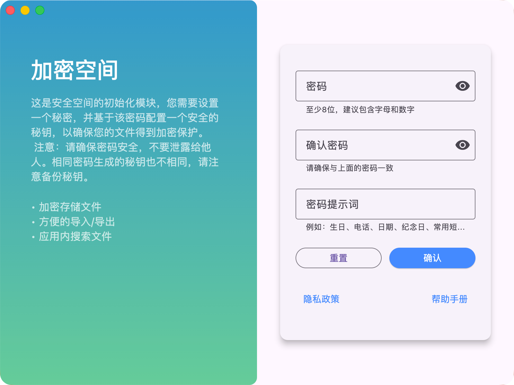
创建加密空间
如果是第一次使用，你需要使用密码创建一个加密空间。
密码的长度建议为8位以上，包含字母、数字和特殊字符。这个密码是登录加密空间重要的凭证，同时也会使用密码生成一个秘钥，用于加密和解密空间内的文件。
💡 提醒：即使使用相同的密码的情况下，不同设备产生的秘钥也不相同；所以，不用担心其他人获取你的加密文件使用相同密码进行解密。
💡 注意：我们不会存储你的密码，也不会将你的密码发送到任何服务器。如果忘记密码将无法找回，请妥善保管。
3. 登录加密空间
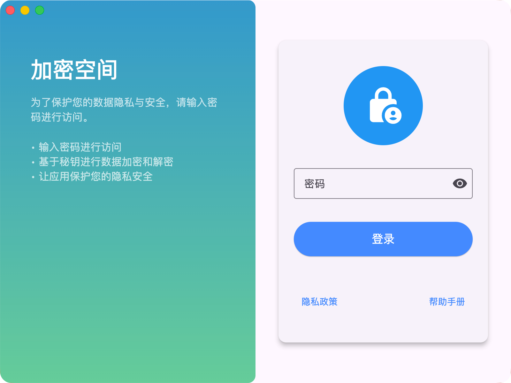
登录加密空间
您需要输入密码，才能登录加密空间，并浏览空间内的文件；这可以有效防止他人未授权访问你的加密空间。
4. 应用界面

主界面
左边栏由有首页、分类、搜索、设置四个选项组成。其中首页是应用的默认界面，分为全部文件、加密文件、解密文件、已删除文件四个区域。
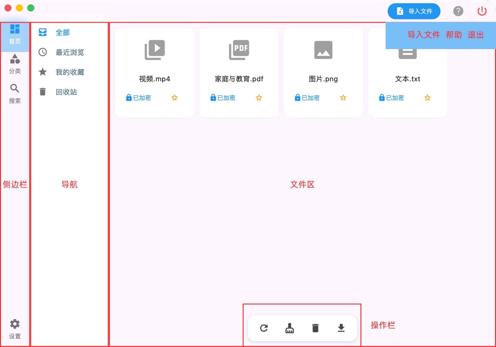
应用界面提示
5. 常用功能

操作按钮
按钮栏主要功能：
按钮栏主要是针对整个应用或者多个文件进行的操作，主要包括：
- 刷新文件列表：点击后会刷新当前区域的文件列表，显示最新的文件。
- 清理缓存文件：点击后会清理空间内的解密缓存文件。
- 清空回收站：清空回收站内的所有文件，进行物理删除。
需要选中文件后进行后续的操作，主要包括：
- 放入回收站：将选中的文件放入回收站，进行软删除。
- 物理删除：将选中的文件从空间内删除，进行物理删除。
- 还原：将回收站内的文件还原到原位置。
右键功能
右键菜单主要针对单个文件进行的操作，主要功能有：

右键菜单
- 打开文件：先进行解密操作，然后调用系统默认的打开文件程序，打开文件。
- 导出文件：将文件解密并导出到本地。
- 导出加密文件：将文件加密并打包后导出到本地。
- 重命名：你可以对文件进行重命名，方便后续管理。
- 添加收藏/取消收藏：你可以将文件添加到收藏列表，方便后续快速访问。
- 放入回收站/还原：将选中的文件放入回收站，进行软删除/或者将文件从回收站还原到原位置。
- 物理删除：将选中的文件从空间内删除，进行物理删除。
- 清理解密缓存：点击后会清理空间内的解密缓存文件。
导入文件：
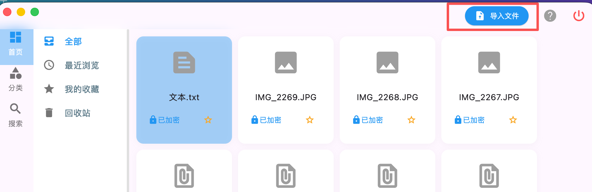
导入文件
如果想加密你的文件，只需要将文件导入到加密空间即可;所有导入到空间内的文件都会被加密存储,并进行集中管理。你可以直接拖拽文件到全部文件区域，也可以点击应用右上角的导入文件按钮，导入需要加密的文件，应用会自动加密文件并存储在本地安全位置。
提示：加密后删除原文件
你可以在基本设置中设置是否自动删除原文件，默认不会删除原文件；如果需要删除原文件，需要手动进行删除。
提示：防止重复导入
导入文件的的时候，会根据文件内容的hash自动判断是否重复导入（可以同名，但是不可以同内容），如果文件已经存在，不会重复导入防止重复存储。
打开文件：
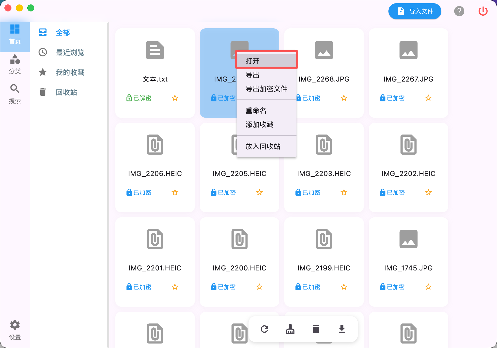
打开文件
如果想查看文件内容，你可以双击文件，即可打开文件，也可以右键文件，选择打开文件。应用会自动解密文件，并调用系统默认应用打开文件。
tips：文件状态由加密状态切换为解密状态，你可以手动清理解密缓存，防止文件泄露。应用退出时也会自动清理解密的文件缓存。
导出文件：
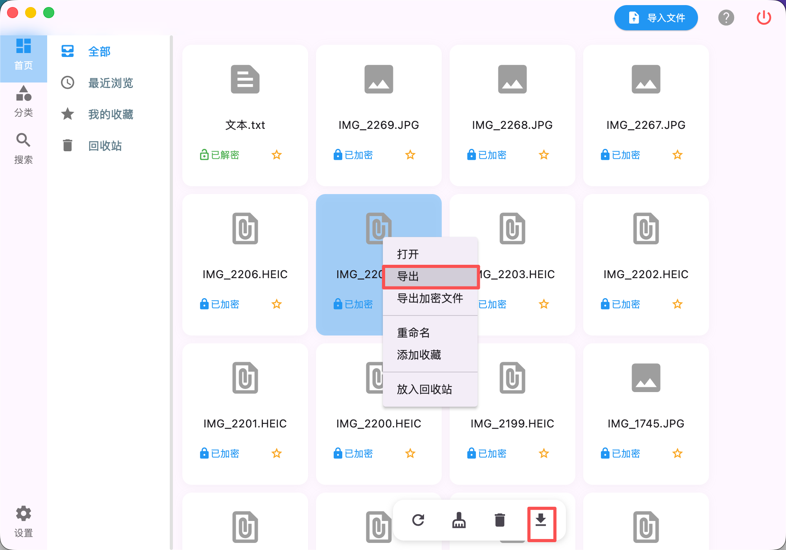
导出文件
你可以右键文件，或者选择后，点击应用底部按钮栏的导出文件按钮，即可导出应用中的文件到选择的路径。
导出的文件会自动解密，并保留原始文件的名称，后续你可以直接使用。
tips：导出的文件是解密后的文件，后续你可以直接使用。
导出加密文件：
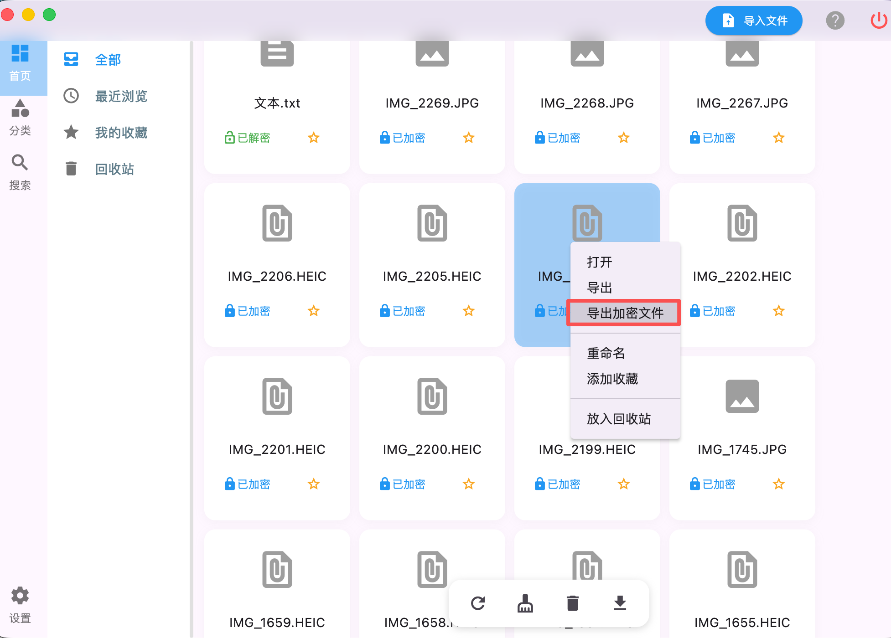
导出加密文件
如果你想导出加密文件，你可以右键文件，选择导出应用中的加密文件。应用会将加密后的文件以及文件元数据打包，导出到选择的路径。
tips：导出的加密文件需要重新导入应用中，才能使用。导出加密文件是为了安全传输和备份文件，防止传输备份过程中被窃取。
清理/删除解密缓存文件：
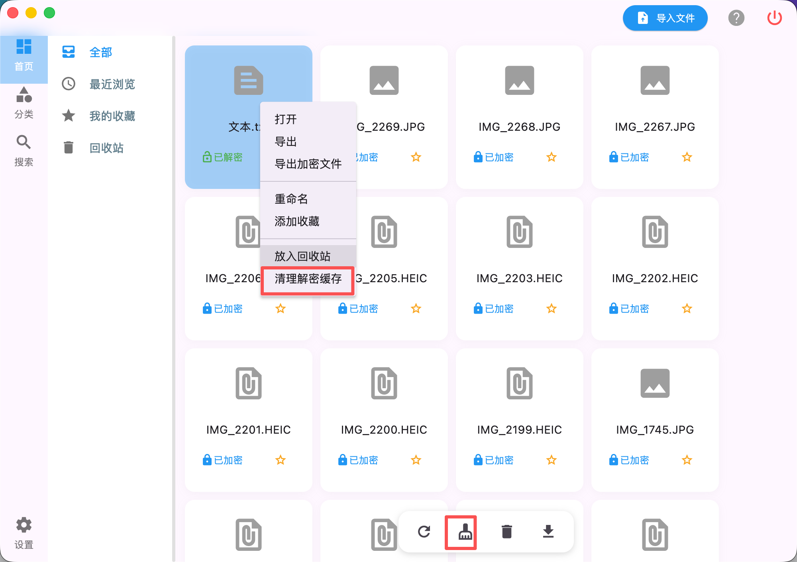
清理解密缓存
如果想清理解密后的文件，你可以点击应用底部按钮栏的清理解密缓存按钮，即可清空应用中全部解密后的文件，防止被泄露。也可以选择右键菜单的清理解密缓存，即可清空选中的文件的解密缓存。
打开文件时会产生解密缓存文件，此时如果设备不在自己手里被他人使用可能会被其他工具搜索或者扫描到。
tips：在设备外借或者维修设备时，注意清理解密缓存文件，并退出应用，防止文件泄露。
回收站/物理删除：
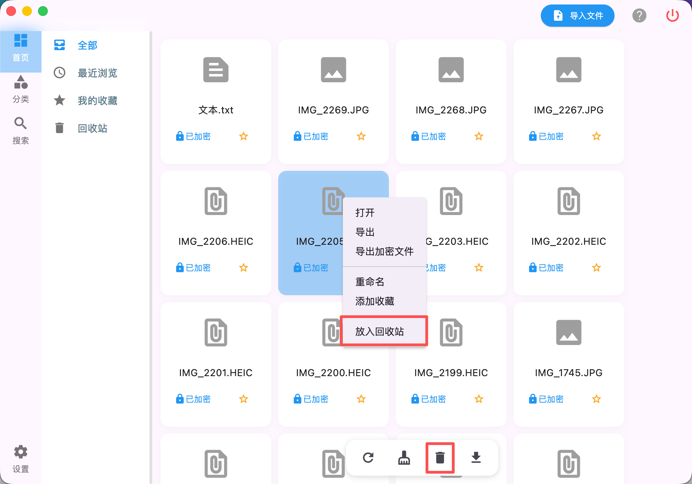
回收站
应用同样提供了回收站功能，你可以将文件移动到回收站，回收站中的文件无论是在系统内还是在应用内，都无法搜索。但是在回收站内的文件，只是逻辑删除，文件本身并没有被删除。
tips：在回收站内的文件，你可以选择物理删除，也可以选择恢复。物理删除会将文件从系统中删除，无法恢复。
分类：
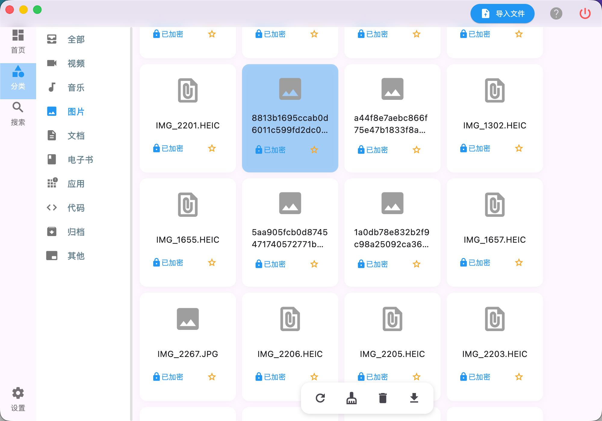
分类
应用提供了文件分类功能，会基于文件的后缀对文件进行分类，方便后续查找。你可以在设置中配置文件分类和文件后缀。
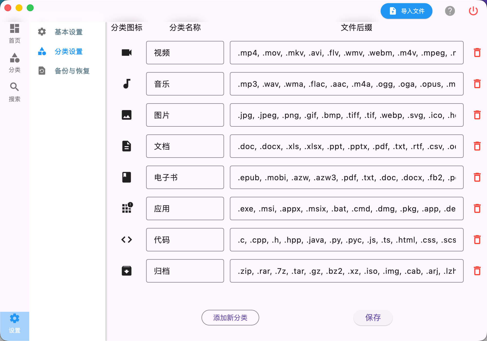
分类设置
搜索：
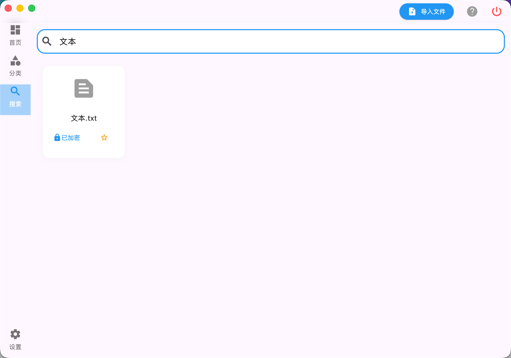
搜索
应用提供了文件搜索功能，你可以根据文件的名称、后缀等进行搜索，但是不会搜索文件的内容。
tips：加密后的文件，无法在系统内搜索到，应用提供了搜索功能，可以在应用内进行快速搜索。
6. 基本设置

设置界面
基本设置包括应用的语言设置、退出登录、秘钥管理等。
语言设置：选择应用的语言，包括中文、英文等，部分文本需要应用重启后生效。
秘钥管理：可以对秘钥进行备份、恢复和清理操作。因为秘钥是加密文件的重要部分，所以建议备份并妥善保管，防止丢失。秘钥在重装系统或者重装应用后，导入应用中，即可使用之前的密码和加密的文件。
tips：在秘钥管理中，你可以备份、恢复和清理秘钥。
7. 数据恢复

设置界面
数据恢复包括应用的备份、恢复操作，包括解密后的文件和加密文件备份。
原文件备份与恢复：在更换密码或者重装应用以及系统后，你可以通过备份文件恢复你的文件。
加密文件备份与恢复：在夸设备间，设备维修期间，或者需要云端备份文件时，你可以通过备份加密文件，并在需要时恢复你的加密文件。
💡 注意：数据和秘钥分开存放，防止他人利用秘钥破解数据。
8. 常见问题解答
Q：文件加密算法
A：应用使用AES-256加密算法对文件进行加密。
Q：安全性问题
A：AES-256加密算法作为标准国际算法，目前安全，应用使用加强秘钥生成，没有使用密码作为秘钥，很难被破解。以2026年的科技水平，在排除量子计算的因素下，AES-256加密算法的安全性是足够的。
Q：数据安全问题
A：应用的加密与存储功能完全基于本地运行，未启用任何网络相关能力。
这意味着应用不会收集任何个人信息，不会将数据上传至服务器，也不会主动从网络下载数据。
如果想要云端备份，可以选择第三方云服务，备份加密文件到云服务中，这样个人数据会更加的安全，避免数据泄露和丢失。
这样既能有效防止数据泄露，也能避免文件意外丢失，进一步保障个人数据安全。
9. 联系我们
如遇到问题或需要，以及额外的需求和建议，可以通过以下方式联系我们：
技术支持邮箱：aboysun@126.com

微信二维码